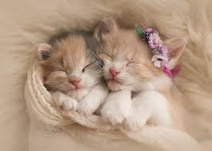

I am a proud owner of this fine establishment. My main mission in life is to find a home for all these adorable and energetic little creatures.
Hannah felt like there was something missing in her life. So, she
recently came to our establishment and adopted three beautiful newborn kittens. She knew right at that
moment. The three beautiful newborn kittens were the one to fill her life with happily.

Jen was so happy to adopt two cutie kittens for our establishment. She could not stop hugging and cuddling with them and was updating us.
Here are some other pet adoption agencies where you are visit. They are happy to assist you if you have any questions.
Since the late 1990s, our main objection is to bring a little bundle of enjoy to everyone and anyone out there. There are some much different type of adorable and energetic felines waiting for you and they are looking for a house to spend the rest of their life with. You could be the one. Come and register online or visit our establishment.
If you are new to adoption, you are likely wondering exactly what adoption is and what are the process of adopting. You do not have to worry because we have a 24/7 hours service to assist you.
These kittens are happily waiting for you to adopt them...